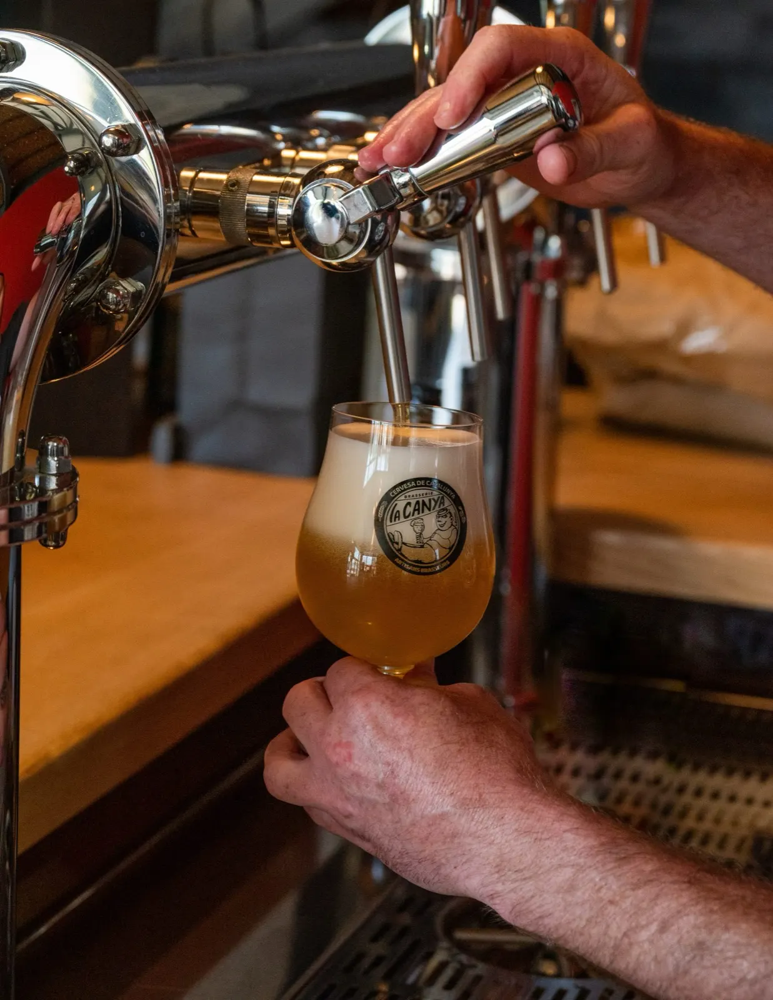
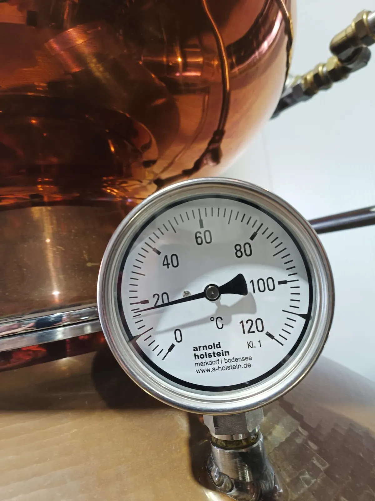
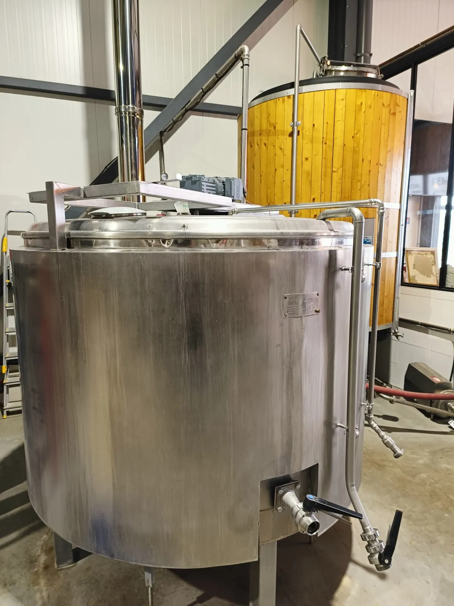
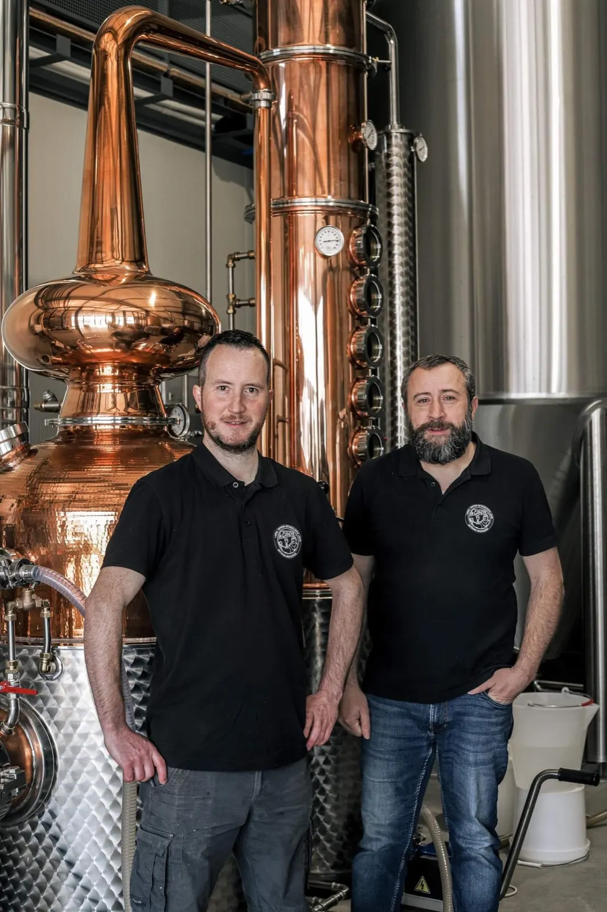
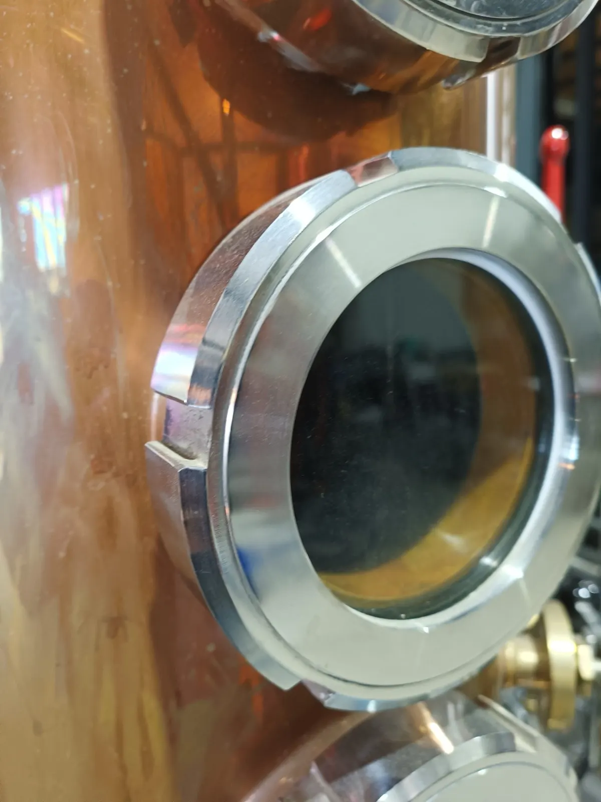
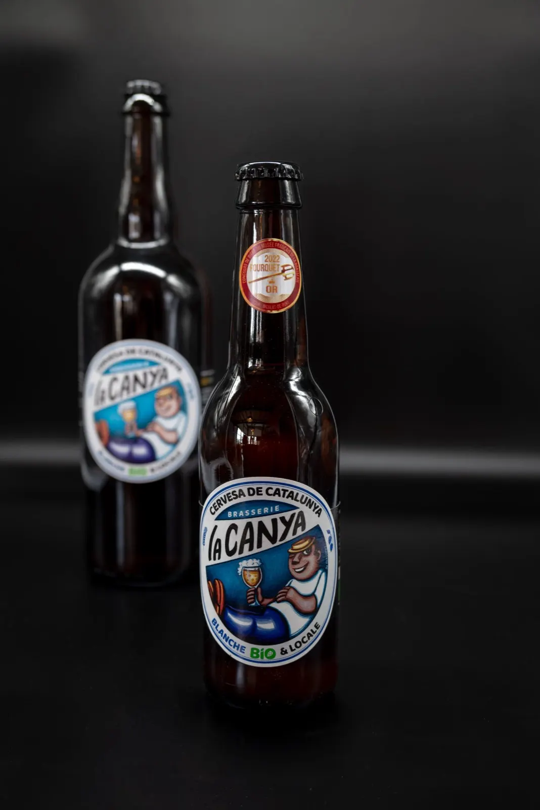
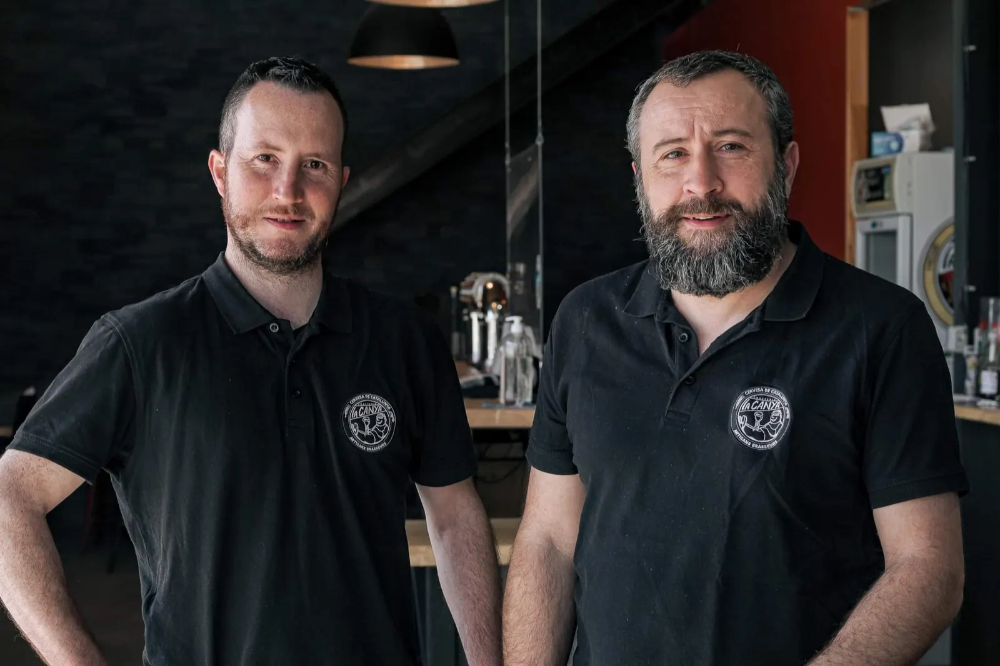
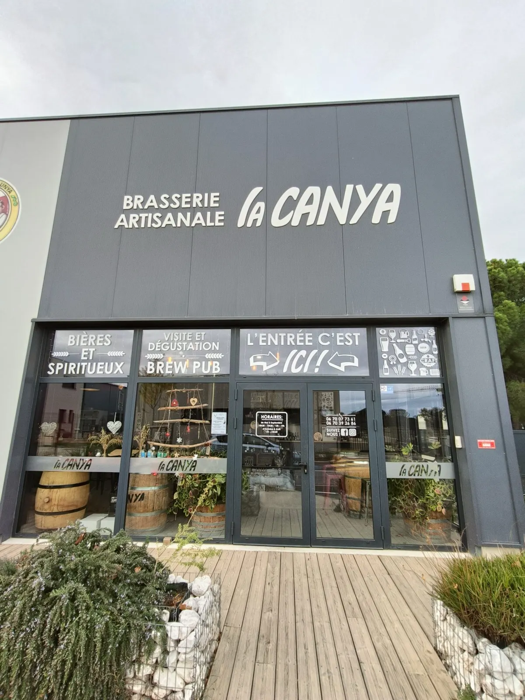

Au pied des Albères, en Pays Catalan
Bières et spiritueux bio, brassés et distillés sur place.


À Saint André, nous élaborons des bières et des spiritueux 100 % biologiques, dans le respect de l'environnement et du terroir. La brasserie est aussi un lieu où vous pouvez déguster ce qui est brassé sur place, avec de la charcuterie ou une planche mixte.
- 100 % biologique
- Bières non filtrées, non pasteurisées
- 1er whisky du Pays Catalan
- Coup de Cœur du trophée RSE 2019
- Brasserie certifiée éco-défi

Le brassage
Des bières vivantes, dans des tanks à lait reformés.
Nous élaborons des bières pur malt de haute fermentation, dans le respect des traditions brassicoles. Refermentées en bouteille, non filtrées, non pasteurisées : le dépôt au fond de la bouteille est gage de qualité.
La brasserie a été entièrement réalisée de nos propres mains, à partir de tanks à lait reformés, toujours dans un but d'upcycling. Elle est en démarche zéro déchet : tous les résidus de céréales du brassage vont aux agriculteurs locaux.
Depuis 2020, en plus de la gamme traditionnelle, nous proposons des bières éphémères, qui naissent et disparaissent au gré des saisons et des envies des brasseurs.
Nos bières, par caractère
- Légère et rafraîchissante
- Gourmande
- Ronde et douce
- Fruitée
La houblonnière
Nous avions installé notre propre houblonnière pour aller vers l'autonomie. Les sécheresses nous ont amenés à arrêter la production : le houblon vient désormais d'ailleurs, mais toujours au plus près.


La distillation
Whiskies, gins, anisés : la même démarche que la brasserie.
La majorité des fournisseurs de la distillerie vient, elle aussi, d'un circuit court : céréales, emballages, marketing.
- 2017
Première distillation, chez notre confrère de la distillerie Castan à Villeneuve-sur-Vère, qui partage la même philosophie.
- 2020
Sortie de notre premier whisky. Avec la marque Seixanta 6, la brasserie embouteille le 1er whisky du Pays Catalan.
- 2022
Livraison de notre propre alambic, acquis en 2021. Depuis, la distillerie élabore des gins, un anisé, des liqueurs, et travaille sur un deuxième anisé.
- 2023
La distillerie prend son identité, avec un logotype bien à elle.
Bar et boutique
Les produits du moment.
Quelques bières et spiritueux du moment. Sur place : la boutique, le bar et la planche tapas. N'hésitez pas à venir visiter la boutique, ou à commander en ligne.

Brasser provoque la passion, distiller de l'émotion.

Particuliers, associations, professionnels
« La bière artisanale n'est pas plus chère ! »
Pour une soirée, un festival ou votre carte, proposez une bière artisanale, bio et locale. Trouvez l'offre qui vous correspond.
-
Particulier
Une soirée ou un événement à organiser ? Louez une tireuse à bière et réservez nos bières bio en fûts de 30 litres, parmi la gamme disponible. Nous vous présentons le fonctionnement de la machine.
- Location de tireuse
- Fûts de 30 litres
-
Événement, festival
Le bar est un élément central : nous mettons à votre disposition le matériel nécessaire à sa bonne tenue, et nous gérons la logistique avec vous.
- Tireuse mobile ou fixe, à froid humide
- Verre réutilisable consigné
- Comptoir
-
CHR, professionnel
Caviste, restaurateur, commerçant, hôtel ou camping : devenez partenaire d'une entreprise locale et proposez à vos clients une bière biologique locale. Contactez-nous pour une offre personnalisée.
- Fûts de 30 l à poche recyclable, tête plate
- Verrerie, PLV
- Animation commerciale sur demande
- Livraison

Nous sommes à Saint André
Arrêtez-vous et venez nous voir.
Pour connaître nos heures d'ouverture, un coup de téléphone suffit. Visite gratuite de la brasserie entre mai et septembre, sur rendez-vous.
- Adresse
- 7 parc d'activités Albères Méditerranée
66690 Saint André - Téléphone
- 06 70 07 73 61
06 70 39 26 86